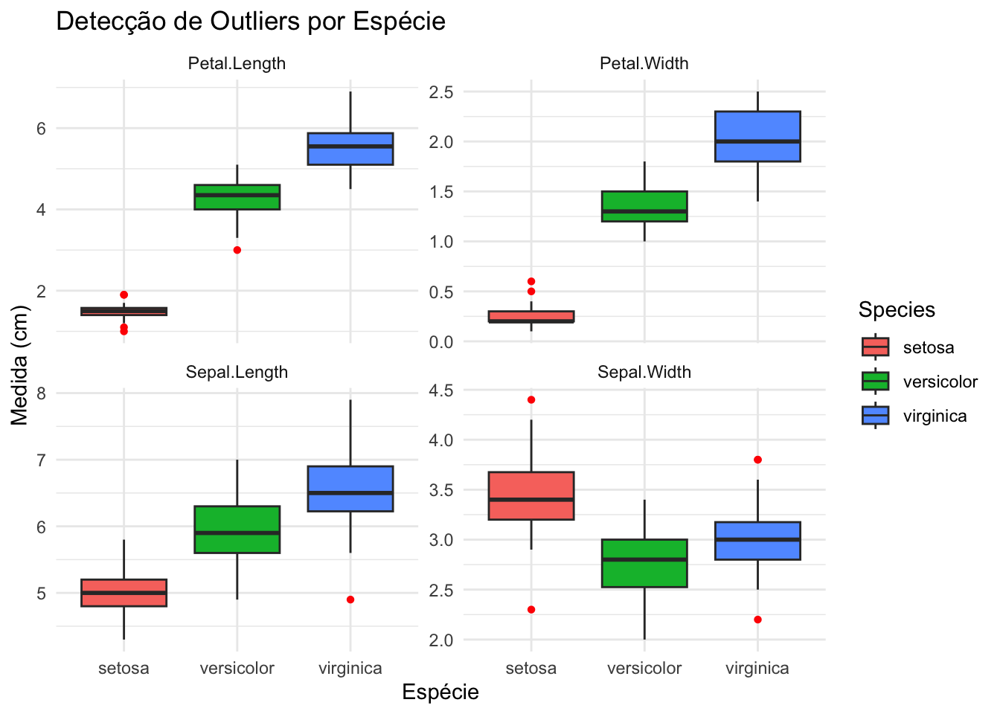

renv::restore()- The library is already synchronized with the lockfile.Diagnóstico para Modelagem com kNN
“Se quisermos aprender algo sobre a natureza última das espécies, devemos reduzir o problema aos termos mais simples e estudar algumas espécies facilmente reconhecidas e bem diferenciadas” - Edgar Anderson
O conjunto de dados Iris é muito mais do que apenas um exercício para iniciantes, é a “cápsula do tempo” que uniu a estatística clássica de 1936 com a era moderna do Aprendizado de Máquina. Criado por Ronald Fisher em uma época de cálculos manuais, ele ganhou nova vida na década de 1980 como membro fundador do Repositório UCI, tornando-se a primeira régua universal para comparar algoritmos quando o poder computacional ainda era um luxo.
Com apenas 150 amostras, ele sobreviveu às décadas ao ocupar um “ponto ideal” raro: é simples o suficiente para não intimidar, mas possui uma sobreposição sutil entre as espécies que pune o descuido. Para o k-Vizinhos Mais Próximos (kNN), o Iris é o mentor que força o cientista de dados a perceber que a distância matemática entre os pontos é o que define a realidade.
Este projeto utiliza o renv para reprodutibilidade. Para restaurar as versões exatas dos pacotes, execute este comando no seu console do R após clonar este repositório:
renv::restore()- The library is already synchronized with the lockfile.Utilizaremos três pacotes principais:
tidyverse, para manipulação de dados
Gally, para gráficos de correlação/pares que mostram as 4 variáveis simultaneamente
knitr, para formatar tabelas de forma elegante no HTML gerado
library(tidyverse)
library(GGally)
library(knitr)Vamos verificar a diferença entre estas duas funções populares para iniciar uma análise de dados.
glimpse(iris)Rows: 150
Columns: 5
$ Sepal.Length <dbl> 5.1, 4.9, 4.7, 4.6, 5.0, 5.4, 4.6, 5.0, 4.4, 4.9, 5.4, 4.…
$ Sepal.Width <dbl> 3.5, 3.0, 3.2, 3.1, 3.6, 3.9, 3.4, 3.4, 2.9, 3.1, 3.7, 3.…
$ Petal.Length <dbl> 1.4, 1.4, 1.3, 1.5, 1.4, 1.7, 1.4, 1.5, 1.4, 1.5, 1.5, 1.…
$ Petal.Width <dbl> 0.2, 0.2, 0.2, 0.2, 0.2, 0.4, 0.3, 0.2, 0.2, 0.1, 0.2, 0.…
$ Species <fct> setosa, setosa, setosa, setosa, setosa, setosa, setosa, s…Como podemos observar, o glimpse() fornece uma visão bem formatada e organizada para conjuntos de dados, exibida de forma horizontal, incluindo:
Número de Linhas
Número de Colunas
Nomes das colunas
Tipo de dado de cada coluna
dbl — double, valores numéricos decimais
fct — factor, variável categórica com níveis definidosComo podemos ver, ele é projetado para mostrar a estrutura, não todos os valores, portanto não é a ferramenta ideal para visualizar todos os valores únicos.
Vamos conferir como o summary() difere da função anterior.
summary(iris) Sepal.Length Sepal.Width Petal.Length Petal.Width
Min. :4.300 Min. :2.000 Min. :1.000 Min. :0.100
1st Qu.:5.100 1st Qu.:2.800 1st Qu.:1.600 1st Qu.:0.300
Median :5.800 Median :3.000 Median :4.350 Median :1.300
Mean :5.843 Mean :3.057 Mean :3.758 Mean :1.199
3rd Qu.:6.400 3rd Qu.:3.300 3rd Qu.:5.100 3rd Qu.:1.800
Max. :7.900 Max. :4.400 Max. :6.900 Max. :2.500
Species
setosa :50
versicolor:50
virginica :50
Ele fornece uma visão geral estatística rápida de um determinado conjunto de dados ou vetor. Quando aplicado a dados numéricos, retorna as seguintes estatísticas resumidas principais:
Min: O valor mínimo nos dados
1st Qu: O primeiro quartil (percentil 25)
Median: O valor central (percentil 50)
3rd Qu: O terceiro quartil (percentil 75)
Max: O valor máximo nos dadosA limpeza vem antes da estatística; ao tratar as inconsistências primeiro, garantimos que a média, variância e desvio padrão calculados reflitam fielmente a verdadeira natureza da população.
Vamos começar verificando na/NaN em nossos dados. Se os encontrarmos, eles podem ter dois significados: dados ausentes ou não aplicável.
Se forem Dados Ausentes: Geralmente você faz a imputação (preenche com a média/mediana) ou remove a linha se a perda for mínima.
Se for Não Aplicável: Frequentemente você faz a codificação (ex: substitui NaN por 0 ou uma categoria como “Nenhum”) para que o modelo entenda que a ausência é uma informação em si.
colSums(is.na(iris))Sepal.Length Sepal.Width Petal.Length Petal.Width Species
0 0 0 0 0 O objetivo principal da estatística descritiva é resumir e organizar as características de um conjunto de dados para que ele seja fácil de entender. Em vez de olhar para 150 linhas de dados brutos, estas métricas oferecem um “panorama” dos valores típicos e da diversidade dentro dos dados.
Utilizando o Dataset Iris, vamos detalhar estes conceitos fundamentais.
\[\bar{x} = \frac{1}{n}\sum_{i=1}^{n} x_i\]
iris %>%
group_by(Species) %>%
summarise(
mean_sepal_length = mean(Sepal.Length),
mean_sepal_width = mean(Sepal.Width),
mean_petal_length = mean(Petal.Length),
mean_petal_width = mean(Petal.Width)
) %>%
kable()| Species | mean_sepal_length | mean_sepal_width | mean_petal_length | mean_petal_width |
|---|---|---|---|---|
| setosa | 5.006 | 3.428 | 1.462 | 0.246 |
| versicolor | 5.936 | 2.770 | 4.260 | 1.326 |
| virginica | 6.588 | 2.974 | 5.552 | 2.026 |
A análise mostra que o Petal.Length da setosa possui uma grande lacuna em relação às outras espécies, e o Isolamento trabalha a favor da classificação.
Se você enfileirar todas as 150 flores, da sépala mais curta para a mais longa, a mediana é o valor exatamente no meio (os valores 75 e 76).
Por que isso importa: Ao contrário da média, a mediana não é “puxada” por valores extremos (como uma única flor gigante de 20 cm). Se a média e a mediana estiverem próximas, é provável que seus dados sejam simétricos.
iris %>%
group_by(Species) %>%
summarise(
median_sepal_length = median(Sepal.Length),
median_sepal_width = median(Sepal.Width),
median_petal_length = median(Petal.Length),
median_petal_width = median(Petal.Width)
) %>%
kable()| Species | median_sepal_length | median_sepal_width | median_petal_length | median_petal_width |
|---|---|---|---|---|
| setosa | 5.0 | 3.4 | 1.50 | 0.2 |
| versicolor | 5.9 | 2.8 | 4.35 | 1.3 |
| virginica | 6.5 | 3.0 | 5.55 | 2.0 |
Os valores da média e da mediana estão próximos para todas as espécies, sugerindo que o conjunto de dados Iris possui distribuições normais.
Mede o quão longe cada número no conjunto está da média. Matematicamente, é a média das diferenças quadradas em relação à Média.
\[s = \sqrt{\frac{1}{n-1}\sum_{i=1}^{n}(x_i - \bar{x})^2}\]
iris %>%
group_by(Species) %>%
summarise(
sd_sepal_length = sd(Sepal.Length),
sd_sepal_width = sd(Sepal.Width),
sd_petal_length = sd(Petal.Length),
sd_petal_width = sd(Petal.Width)
) %>%
kable()| Species | sd_sepal_length | sd_sepal_width | sd_petal_length | sd_petal_width |
|---|---|---|---|---|
| setosa | 0.3524897 | 0.3790644 | 0.1736640 | 0.1053856 |
| versicolor | 0.5161711 | 0.3137983 | 0.4699110 | 0.1977527 |
| virginica | 0.6358796 | 0.3224966 | 0.5518947 | 0.2746501 |
O menor valor registrado.
iris %>%
group_by(Species) %>%
summarise(
min_sepal_length = min(Sepal.Length),
min_sepal_width = min(Sepal.Width),
min_petal_length = min(Petal.Length),
min_petal_width = min(Petal.Width)
) %>%
kable()| Species | min_sepal_length | min_sepal_width | min_petal_length | min_petal_width |
|---|---|---|---|---|
| setosa | 4.3 | 2.3 | 1.0 | 0.1 |
| versicolor | 4.9 | 2.0 | 3.0 | 1.0 |
| virginica | 4.9 | 2.2 | 4.5 | 1.4 |
O maior valor registrado.
iris %>%
group_by(Species) %>%
summarise(
max_sepal_length = max(Sepal.Length),
max_sepal_width = max(Sepal.Width),
max_petal_length = max(Petal.Length),
max_petal_width = max(Petal.Width)
) %>%
kable()| Species | max_sepal_length | max_sepal_width | max_petal_length | max_petal_width |
|---|---|---|---|---|
| setosa | 5.8 | 4.4 | 1.9 | 0.6 |
| versicolor | 7.0 | 3.4 | 5.1 | 1.8 |
| virginica | 7.9 | 3.8 | 6.9 | 2.5 |
Existe uma lacuna de 1,1 cm — significando que nenhuma flor setosa tem comprimento de pétala acima de 1,9, e nenhuma flor versicolor tem comprimento de pétala abaixo de 3,0.
Como o k-Vizinhos Mais Próximos (kNN) é um algoritmo baseado em distância, os outliers podem distorcer significativamente as fronteiras de classificação. Um único valor extremo pode “puxar” o cálculo do vizinho mais próximo para a classe errada.
Utilizaremos Boxplots para visualizar a distribuição e identificar quaisquer pontos que estejam fora do intervalo interquartil (IQR).
iris %>%
pivot_longer(
cols = -Species,
names_to = "Feature",
values_to = "Value"
) %>%
ggplot(aes(x = Species, y = Value, fill = Species)) +
geom_boxplot(outlier.colour = "red", outlier.shape = 16) +
facet_wrap(~Feature, scales = "free_y") +
theme_minimal() +
labs(
title = "Detecção de Outliers por Espécie",
x = "Espécie",
y = "Medida (cm)"
)
Portanto, estes outliers não devem ser removidos antes do treinamento do KNN porque representam variações biológicas naturais, embora raras, de uma espécie altamente consistente, e removê-los simplificaria artificialmente a compreensão do modelo sobre a complexidade real dos dados.
A análise exploratória demonstra que o dataset Iris possui características ideais para o algoritmo kNN, mas exige atenção à estrutura das suas variáveis. A espécie Setosa apresenta uma separabilidade clara, garantindo alta precisão devido à sua distância em relação às demais. Já a sobreposição entre Versicolor e Virginica torna o modelo dependente de um ajuste rigoroso do hiperparâmetro k, uma vez que a fronteira de decisão será definida pela densidade local de pontos onde as médias das espécies se aproximam.
Para assegurar a eficácia do modelo, é necessária a aplicação de normalização (escala) nas features, garantindo que variáveis de maior magnitude não distorçam os cálculos de proximidade. Embora a baixa variância observada favoreça a consistência do kNN, a presença de outliers na largura da sépala reforça a necessidade de um modelo robusto, capaz de ignorar ruídos pontuais para manter uma boa generalização sobre a complexidade biológica real dos dados.
Importando scikitlearn
import pandas as pd
import numpy as np
import matplotlib.pyplot
import seaborn as sns
from sklearn.preprocessing import StandardScaler
from sklearn.model_selection import train_test_split
from sklearn.neighbors import KNeighborsClassifier
from sklearn.metrics import accuracy_score, confusion_matrix, classification_report
df = sns.load_dataset("iris")
print(df) sepal_length sepal_width petal_length petal_width species
0 5.1 3.5 1.4 0.2 setosa
1 4.9 3.0 1.4 0.2 setosa
2 4.7 3.2 1.3 0.2 setosa
3 4.6 3.1 1.5 0.2 setosa
4 5.0 3.6 1.4 0.2 setosa
.. ... ... ... ... ...
145 6.7 3.0 5.2 2.3 virginica
146 6.3 2.5 5.0 1.9 virginica
147 6.5 3.0 5.2 2.0 virginica
148 6.2 3.4 5.4 2.3 virginica
149 5.9 3.0 5.1 1.8 virginica
[150 rows x 5 columns]Normalizar os dados
X = df.drop(columns="species")
y = df["species"]
print(X) sepal_length sepal_width petal_length petal_width
0 5.1 3.5 1.4 0.2
1 4.9 3.0 1.4 0.2
2 4.7 3.2 1.3 0.2
3 4.6 3.1 1.5 0.2
4 5.0 3.6 1.4 0.2
.. ... ... ... ...
145 6.7 3.0 5.2 2.3
146 6.3 2.5 5.0 1.9
147 6.5 3.0 5.2 2.0
148 6.2 3.4 5.4 2.3
149 5.9 3.0 5.1 1.8
[150 rows x 4 columns]print(y)0 setosa
1 setosa
2 setosa
3 setosa
4 setosa
...
145 virginica
146 virginica
147 virginica
148 virginica
149 virginica
Name: species, Length: 150, dtype: str